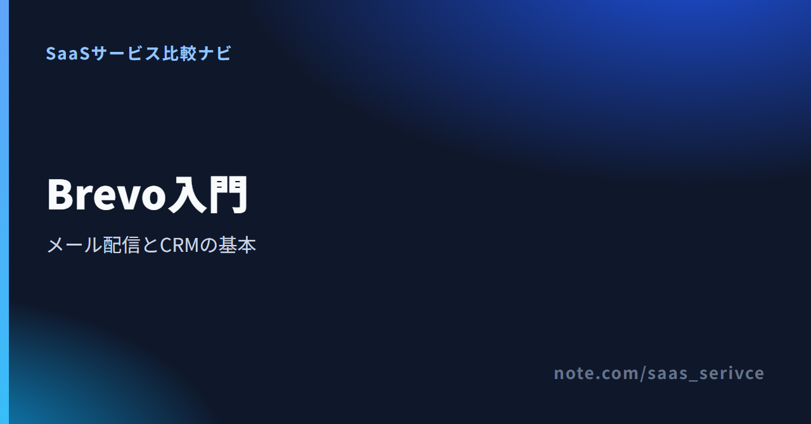

Brevoとは？旧Sendinblueとの関係・機能・料金・使い方を解説
Brevoは、メルマガ配信や通知メール、顧客管理をまとめるサービスです。メール配信とSMTPのどちらを先に使うか迷う人へ、機能、無料枠、料金、日本語対応を順に紹介します。
Brevoとは？メール配信・自動化・SMTPをまとめたサービス
- 旧名称：Sendinblue
- 主な用途：メール配信・SMTP・顧客管理
- 無料枠：1日300通、最大10万連絡先
- 日本語UI：非対応
- 支払い：カード・デビットカード・PayPal
日本語の製品概要と、無料登録への入口を確認できます。

旧SendinblueがBrevoへ名称変更
Brevoは、Sendinblueが2023年5月に名称を変更したブランドです。検索結果や古い解説にSendinblueと書かれていても、現在はBrevoのサービスへつながります。
名称変更後も、中心にあるのはメール配信です。顧客管理、マーケティング自動化、トランザクションメールなども1つにまとまっています。Webサイトには日本語版がありますが、管理画面の表示言語に日本語は含まれません。
Brevoが向く人・向かない人
メルマガとシステム通知を別々のサービスに分けたくない事業者に向きます。連絡先数よりも送信通数を基準にプランを選びたい場合にも候補になります。
一方、日本語の管理画面や日本語の有人サポートが欠かせないチームには不向きです。無料枠は便利ですが、送信上限は1日単位。週末分を翌日にまとめて送る使い方には合いません。
Brevoでできること｜メール配信・顧客管理・自動化
一斉配信とシステム通知の両方を扱えるのがBrevoです。最初から全機能を使おうとせず、今の課題に近い機能から少しずつ始めるのが現実的です。
メルマガとキャンペーン配信
顧客リストに対して、ニュースレターやキャンペーンメールを送る使い方です。Freeは1日300通まで。Starter以上では日次の送信上限がなくなり、選んだ月間送信量が基準になります。
配信先が増える前に見るべきなのは、連絡先数より1か月の送信回数です。同じ1万人のリストでも、月1回と週2回では必要な送信量が大きく変わります。
SMTP・APIで通知メールを送る
会員登録や注文完了など、利用者の操作をきっかけに送るメールにも対応します。SMTPとREST APIは全プランで利用可能です。ただし、Freeの1日300通はトランザクションメールにも適用されます。
メルマガと通知メールは同じ月間送信枠に数えられます。ECや会員サイトで通知が多い場合は、キャンペーン分だけで送信量を見積もらないようにしましょう。
顧客リストと自動化を管理
Freeでは最大10万件の連絡先を保管でき、オートメーションの対象は2,000件までです。Standardでは連絡先数を問わずMarketing Automationを使えます。
連絡先を多く持てることと、多くの人へ一度に送れることは別です。顧客データの保管数と、日次・月次の送信量を分けて考える必要があります。
FreeにはAIアシスタントのAuraも含まれます。SMSとWhatsAppはメールの月間枠とは別で、必要なクレジットを購入して送る仕組みです。
フォーム・LP・会議予約を組み合わせる
フォームで集めた連絡先を、そのまま配信や自動化へつなげられます。Standardにはランディングページ1件が含まれます。会議予約などの周辺機能もあるため、必要な機能が契約予定のプランに含まれるか、料金画面で見比べてください。
Marketing、Sales、Conversationsなど、製品群ごとの機能を公式の日本語ページで確認できます。
Brevoの登録からメールを送るまでの流れ
登録後は、送信者とドメインを先に整えます。連絡先を入れてすぐ配信するより、誰から届いたメールか受信側が判断できる状態を作るのが先です。
アカウントを作成してログインする
- 公式サイトから無料アカウントを作る
- 登録メールを確認する
- Brevoのログイン画面から管理画面へ入る
- プロフィールと利用目的を設定する
新規登録とログインは入口が異なります。既存利用者が「brevo login」を探している場合は、login.brevo.comから進みます。
送信者とドメインを登録する
アカウントメニューの「Settings」から「Senders, Domains, IPs」へ進みます。送信者は「Senders」で「Add a sender」を選び、差出人名とメールアドレスを登録します。
ドメインは同じ設定内の「Domains」から追加し、「Authenticate」で認証します。Brevoが表示するDKIMやDMARCの値をDNSへ登録してください。ドメインを認証すると、そのドメインを使う送信者は個別認証が不要です。
連絡先を取り込みキャンペーンを作る
連絡先は「CRM」→「Contacts」→「Import contacts」から追加します。ファイルのアップロードとコピー＆ペーストを選べるため、項目をBrevoの属性へ対応付け、取り込み先のリストを指定します。
メールは「Marketing」→「Campaigns」→「Create campaign」→「Email」で作成します。送信者、受信者、件名、プレビュー文を設定し、「Start Designing」で本文を作成。テスト後に送信日時を決めます。
配信結果を確認する
配信後はCampaignsのレポートで配信数、不達、購読解除を見ます。購読解除した連絡先は「CRM」→「Contacts」でフィルターを追加し、「Email」→「Unsubscribed from emails」から抽出できます。
未登録なら無料アカウントの作成へ、登録済みならログイン画面へ進めます。
Brevoの無料枠と料金プランの選び方
料金プランはFreeを含む5段階で構成されています。StarterとStandardは、月間送信量に応じて表示額が変わります。
現在の標準プランに「Business」という名称はありません。Free、Starter、Standard、Professional、Enterpriseから選びます。
Freeで使える送信数と連絡先
- 料金：$0、期限なし、カード不要
- 送信：1日300通、未使用分の繰越なし
- 連絡先：最大100,000件
- 利用者：1ユーザー
- 自動化対象：2,000件
Freeアカウントは4か月使わないと削除対象になります。ただし、自動化やトランザクションメールなどの自動活動があれば、利用中として扱われます。
Starter・Standard・Professional・Enterpriseの違い
- Starter：$9/月から。日次送信上限がなく、月間送信量で選ぶ
- Standard：$18/月から。A/Bテスト、高度分析、Marketing Automationなどを追加
- Professional：$499/月から。月15万通から、10席を含む
- Enterprise：個別見積もり。専用IPを1つ含む
1ドル=157円換算（執筆時点の目安。為替で変動）なら、Starterは約1,413円、Standardは約2,826円、Professionalは約78,343円です。日本から料金ページを開くとJPY表示も選べるため、契約時は画面の通貨を優先してください。
月払い・年払い・追加費用を見る
料金ページは月払いと年払いを切り替えられ、年払いは10%割引です。StarterでBrevoロゴを外す場合は追加費用が発生します。送信量を先に選ぶと表示額が変わるため、最小価格だけで予算を決めないようにしましょう。
定額プランとは別に、メール、SMS、WhatsAppのクレジットを前払いで追加できます。Pay as you goを探している場合は、この買い切り枠を確認します。
送信量と支払い周期を切り替え、必要なプランの表示額を確認できます。
SMTP・WordPress・外部サービスをBrevoにつなぐ方法
連携方法は、SMTP、公式プラグイン、APIで異なります。秘密鍵やパスワードは記事や公開リポジトリへ貼らず、管理できる場所へ保存してください。
SMTPリレーとAPIキーを使う
既存システムから送る場合は、Brevoの「SMTP & API」でSMTPキーまたはAPI v3キーを発行します。SMTPキー、APIキー、通常のログインパスワードは別物です。送信上限はキャンペーンとトランザクションの合計で数えます。
WordPress・Contact Form 7・WP Mail SMTPをつなぐ
WordPressではBrevo公式プラグインを追加し、Brevoで発行したAPI v3キーで有効化します。SMTPキーでは公式プラグインを有効化できません。
Contact Form 7やWP Mail SMTPは公式プラグインとは別の接続経路です。利用する場合は各プラグインの現行手順を確認し、BrevoのAPI v3キーとSMTPキーを取り違えないでください。
Shopify・WooCommerce・Wixをつなぐ
ECやWebサイト作成サービスと連携すると、注文や登録を起点にメールを送れます。連携元で同意を得た情報だけを取り込み、重複登録が起きないかも確認します。
Webhook・SDK・外部連携を確認する
開発が必要な場合は、公式の開発者向け文書でAPI、Webhook、SDKを選びます。一般APIの利用制限は全プランにあるため、大量処理は再試行の設計も必要です。
SMTPやWordPress連携へ進む前に、無料枠と利用する製品群を確認できます。
日本語対応・日本からの支払い・請求書
日本語の公式サイトはありますが、管理画面と有人サポートは日本語に対応していません。契約担当者が英語画面を扱えるかが判断点です。
管理画面とサポートは日本語非対応
管理画面は英語、フランス語、イタリア語、スペイン語、ポルトガル語、ドイツ語に対応。公式サポートも同じ6言語で、日本語は含まれません。
カード・デビットカード・PayPalで支払う
支払いはクレジットカード、デビットカード、PayPalに対応します。プリペイドデビットカードは使えません。新しい管理者アカウントではPayPalが使えない場合があります。
公式公開情報には、日本発行カードとJCBへの対応が記載されていません。利用可否は購入画面に表示されるカードブランドで判断します。
PDF請求書をダウンロードする
請求書は、My plan内のInvoicesまたはBilling historyからPDFで取得できます。閲覧にはオーナーかプラン管理権限が必要です。税額は請求先住所をもとに決まり、請求書へ表示されます。日本での税務処理は税理士に確認してください。
解約・休止・Freeへの移行
有料プランはいつでも解約でき、現在の請求期間が終わるとFreeへ移ります。月払いのStarter、Standard、Professionalは最大3か月休止可能です。年払いProfessionalの解約と、専用IPの停止はサポートへの連絡が要ります。
配信停止とアカウント削除は別です。連絡先の購読解除はContactsで管理し、アカウントを完全に閉じると保存データが失われます。
契約画面で表示通貨、支払い方法、次回請求額を見てから有料化できます。
配信できないときに確認する認証・バウンス・停止状態
送れない原因は、ドメイン認証、宛先側のエラー、アカウント状態に分けて調べます。認証情報やAPIキーを第三者へ公開してはいけません。
ドメイン認証とSPF・DKIM・DMARC
「Settings」→「Senders, Domains, IPs」→「Domains」で対象ドメインを開きます。認証状態と、Brevoが示すDNSレコードを照合してください。送信者アドレスだけを登録しても、ドメイン認証の代わりにはなりません。
hard bounce・soft bounce・deferredの違い
deferredは一時的に配信が遅れ、Brevoが再送を続けている状態です。再送しても届かなければ、一時的な不達を示すsoft bounceになります。hard bounceは、無効なアドレスなどによる恒久的な不達です。Brevoは再送せず、そのアドレスを自動でブロックリストへ入れます。
配信停止の原因は「Deliverability center」に表示されます。キャンペーンの結果が原因なら、警告に示された配信と指標を開き、問題のある連絡先を整理します。購読解除済みの宛先はContactsのフィルターから確認できます。
blocklisted・suspended・unauthorizedを確認
マーケティング配信が初回停止なら、Deliverability centerの案内から再開手続きを進めます。SMTPなどトランザクション配信が停止した場合は、Supportページから審査を依頼します。購読中のプランは停止中も継続するため、放置しないでください。
unauthorized key not foundが出た場合は、API v3キー、SMTPキー、接続先の組み合わせを見直します。公式WordPressプラグインにはAPI v3キーが必要です。
ステータスとサポート窓口を確認
SMTPの残数不足を調べるときは「Transactional」→「Real time」→「Usage and plan」でEmail queueを見ます。Brevo全体の障害は公式ステータスページで確認します。障害でなければ、エラー時刻とメッセージを添えてSupportページから連絡します。
BrevoとMailchimp・MailerLiteの違い
3製品とも無料で始められますが、上限の数え方が異なります。料金への影響が大きいのは、Brevoでは送信通数、MailchimpとMailerLiteでは連絡先数です。
Brevoが向く人
Freeでは最大10万件の連絡先を保管し、1日300通まで送れます。SMTPとAPIも全プランで利用できます。メルマガと通知メールを同じサービスへまとめたい人向けです。
Mailchimpが候補になる人
MailchimpのFreeは最大250連絡先、月500通、1日250通、1オーディエンス、1席です。料金は連絡先数と送信数の両方で増えます。管理画面に日本語はありません。
MailerLiteが候補になる人
MailerLiteのFreeは最大250人、月2,500通、2ユーザーです。3つの自動化、Webサイト1件、ランディングページ1件を含みます。登録後14日間はカード不要で有料機能を試せます。
連絡先を多く保管しつつ、送信通数を基準に契約したい場合の料金を確認できます。
まとめ：Brevoは無料枠で配信方法との相性を確かめる
メルマガとSMTPを同じ送信枠で管理したい人には、Brevoが候補です。Freeで送信者・ドメイン認証とキャンペーン作成を試し、月間通数が増えたら有料プランへ進みます。
Brevoを選ぶ判断基準
- メルマガと通知メールをまとめたい
- 連絡先数より月間送信量で選びたい
- 英語の管理画面を扱える
- SMTPやAPIも同じ契約で使いたい
登録前に確認する項目
月間のキャンペーン数と通知メール数を合計し、必要な送信量を出します。日本から有料化する場合は、表示通貨とカードの対応も契約画面で見てください。
無料登録の条件と、送信量ごとのプランを日本語の公式ページで確認できます。